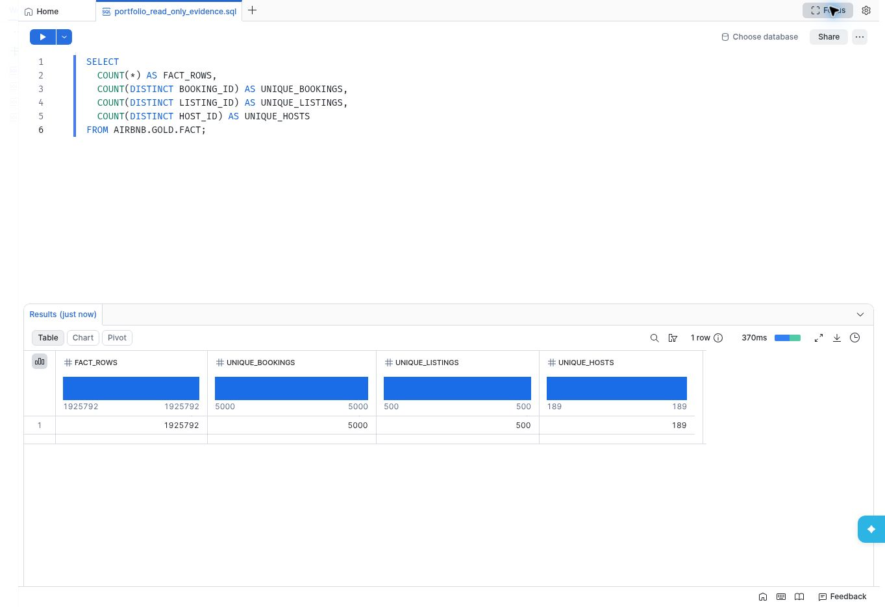
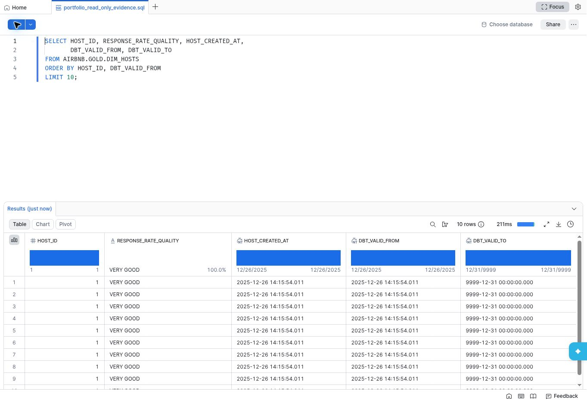
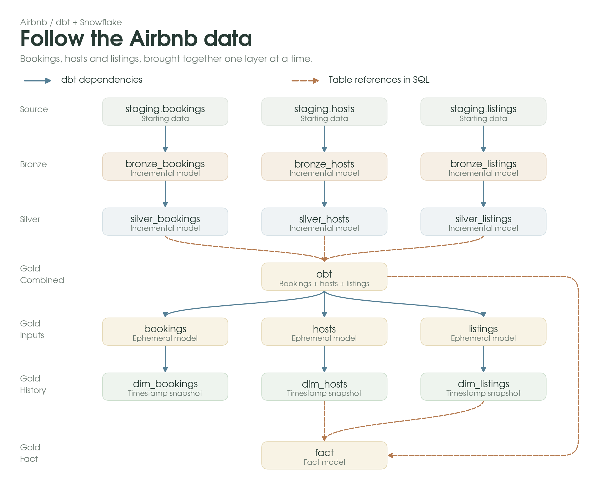

Airbnb Analytics
A dbt project that moves Airbnb bookings, listings and hosts through medallion layers in Snowflake, builds a star schema and a one big table in Gold, and keeps history with snapshots.
Counts measured at capture time by a read-only query against AIRBNB.GOLD.FACT. The row total includes repeated booking IDs, so it is not a count of unique bookings.
It actually ran
Not a diagram of what the pipeline would do. These are read-only queries against the built tables in Snowsight, captured from the account the project was built in.


DBT_VALID_FROM at capture time, so this shows the snapshot structure rather than a captured change. Why that happened is below.How the data flows
Bookings, hosts and listings pass through Bronze and Silver separately, then come together in Gold. Blue arrows are dbt dependencies. Dashed amber arrows are direct SQL table references.

The actual code
Every file below is fetched from the repository when this page loads, so what you read here is whatever is on main right now, not a copy that drifted.
Loading…Straight from the README
Rendered live from the repository, so it stays in step with the project rather than becoming a stale retelling of it.
Loading the README from GitHub…
Read the whole thing
Models, macros, snapshots, tests and the run instructions are all in the repository.